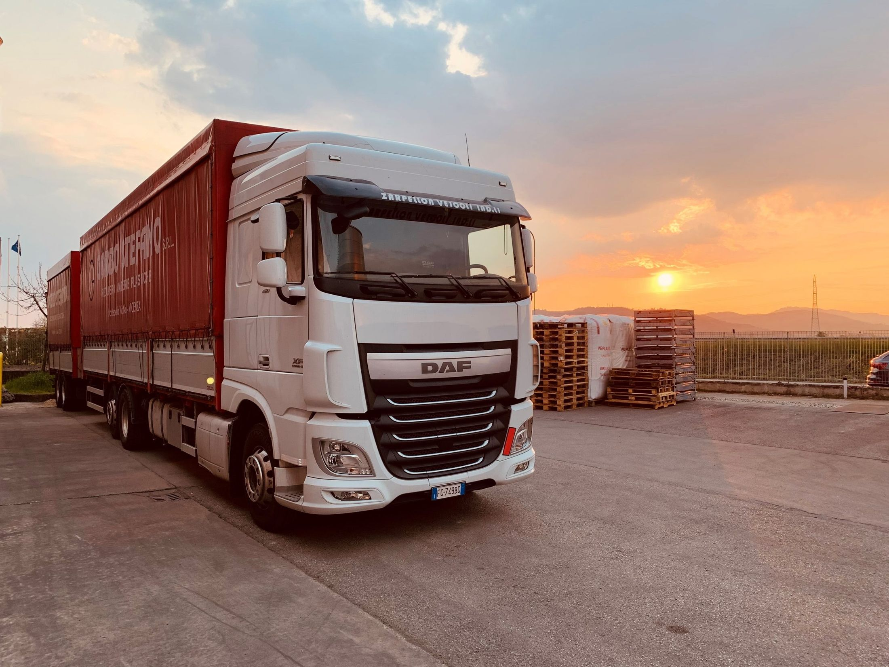
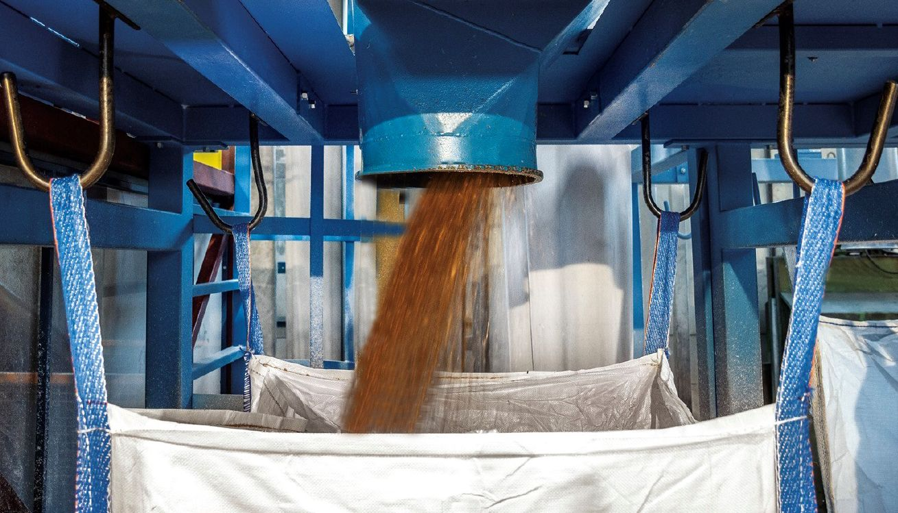
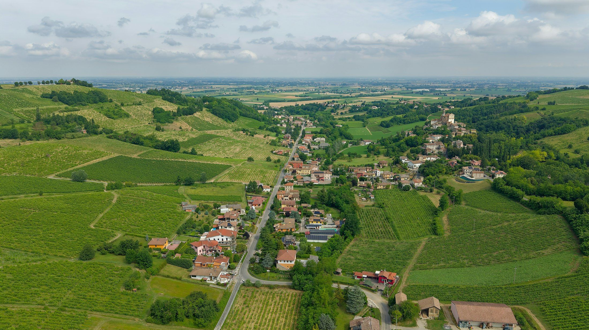
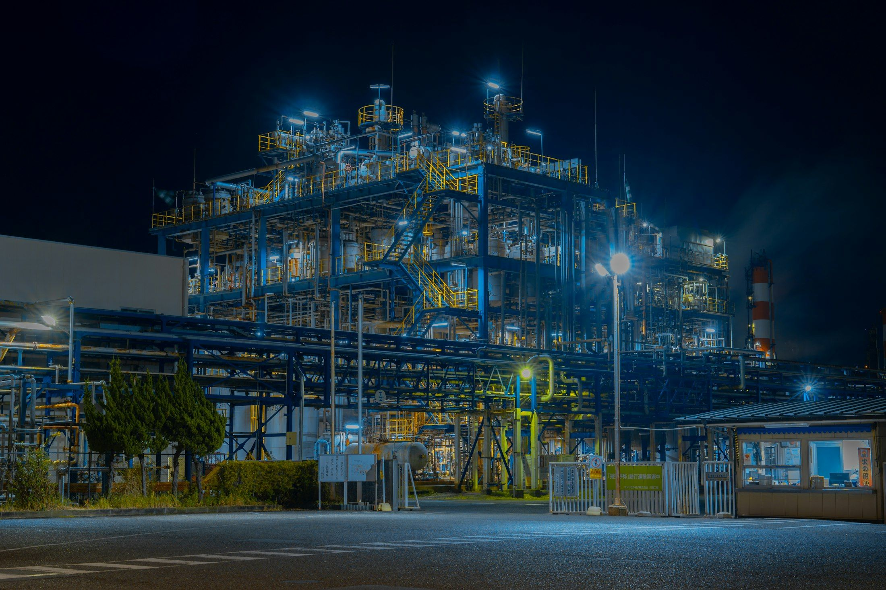

01
Ritiro e gestione scarti di produzione in plastica
Ricezione, selezione e avvio a recupero dei materiali, perché tornino a essere risorse.
Anteprima riservata
Il nuovo sito di Gobbo Stefano Advanced Plastic Recycling
umbra® studio web

Ritiro e gestione scarti di produzione in plastica Montebello Vicentino dal 1987
Dal 1987 gestiamo scarti di produzione di plastica in modo sostenibile e produciamo polimeri 100% riciclati a basso impatto ambientale.
L'azienda
Dal 1987 Gobbo Stefano Advanced Plastic Recycling lavora da Montebello Vicentino: ritiro e gestione scarti di produzione in plastica, recupero e lavorazione materie plastiche post-industriali e produzione di polimeri 100% riciclati (r-polimeri).

Servizi
01 / 05
Ricezione, selezione e avvio a recupero dei materiali, perché tornino a essere risorse.

Selezione dei materiali e avvio a recupero, perché tornino risorse.

Ricezione, selezione e avvio a recupero dei materiali, perché tornino a essere risorse.
Selezione dei materiali e avvio a recupero, perché tornino risorse.

Pratiche, registri e adempimenti ambientali seguiti per conto del cliente.

Montebello Vicentino · Vicenza
Il metodo
Ogni intervento segue lo stesso percorso: tracciabile, documentato, senza passaggi lasciati al caso.
Il materiale arriva in impianto e viene pesato.
Verifica di codici, documenti e qualità del carico.
Separazione per tipologia di materiale.
Ciò che è recuperabile torna in filiera.
Il materiale esce come risorsa.

Lavora con noi
Mandateci il vostro curriculum: lo leggiamo tutto, e vi richiamiamo.
Contatti
Enti, aziende e privati: indicateci il servizio e la zona, vi rispondiamo con tempi e preventivo.
Anteprima riservata · preparata per Gobbo Stefano Advanced Plastic Recycling
Abbiamo usato le foto e le informazioni già pubbliche dell'azienda. L'anteprima è gratuita: se vi piace, acconto del 25% e saldo quando il sito è online, con rimborso completo entro 30 giorni dalla messa online. Hosting, dominio, privacy e cookie li gestiamo noi.
umbra® studio web · umbragency.it